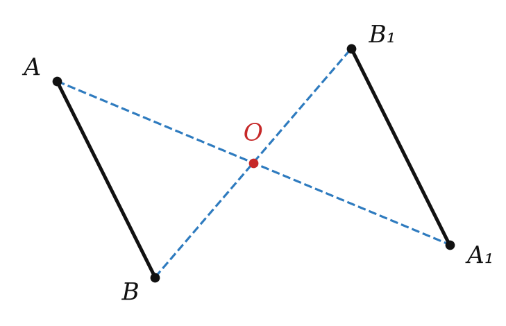
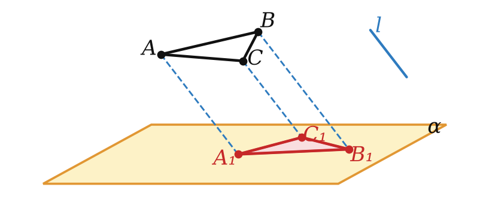
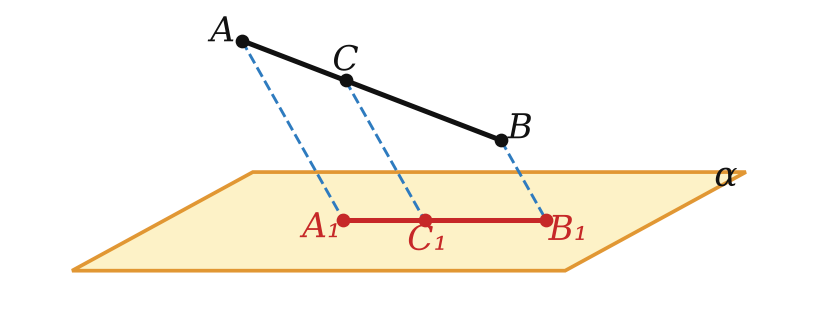
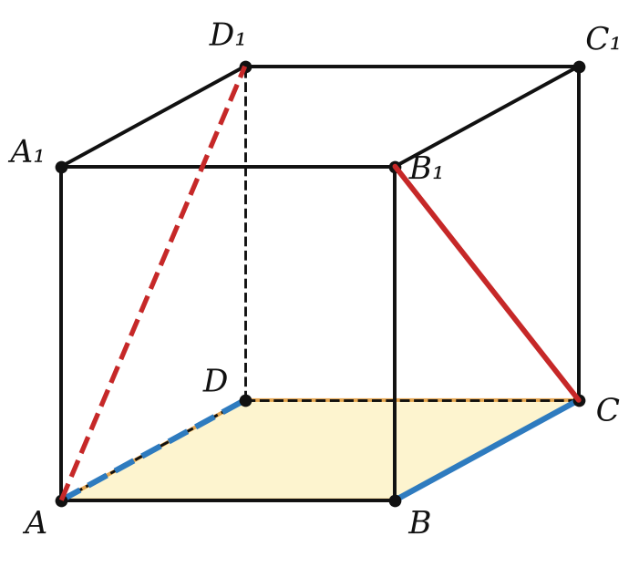

движения, подобие и «тени» фигур


| сохраняется | не сохраняется |
|---|---|
| прямые → прямые (7.1) | длины |
| параллельность (7.2) | углы |
| отношение отрезков на одной или параллельных прямых (7.3) | перпендикулярность |
| середина → середина | отношение непараллельных отрезков |
AC : CB = A₁C₁ : C₁B₁
Пример: AB = 6, BC = 9, A₁B₁ = 4 ⟹ B₁C₁ = 6

Скрещивающиеся B₁C и AD₁ проектируются вдоль AA₁ в параллельные BC и AD.

Теоремы 7.1–7.3 — формулировки